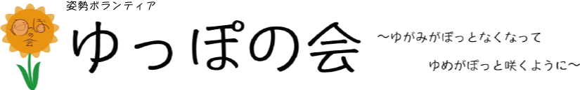
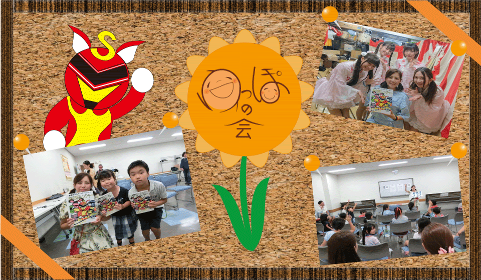
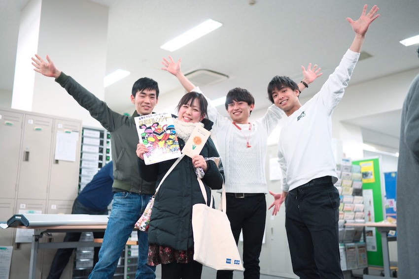

ゆっぽの会では姿勢の大切さを広める活動をしています。姿勢は体の健康維持以外にも、美容やホルモンバランス、生活習慣に大きく影響していることを皆さんはご存知ですか？？講演を通して姿勢の大切さを身に付けましょう！！子どもも大人も高齢者も誰でも気軽にご参加できます。姿勢をよくして、健康な生活を手に入れよう！！
ゆっぽの会公式LINE@
普段姿勢について迷われる事もあるかと思います。
その時は是非こちらをご活用くださいませ
家で使う椅子や机は子どもにあってる？
こんな姿勢はどうですか？など、写真を送っていただけたらご相談にのります。
ゆっぽの会の一つの柱はお子さんの姿勢の意識を改善することです！小さい頃から姿勢の知識をつけることで、大人になってもいい姿勢を身につけることができます。姿勢の知識を身に付けてもらうため、ゆっぽの会では、親子で参加できるお話し会を開催。気軽にご参加ください。
ゆっぽの会では幼稚園、保育園、ママさん会で、姿勢の大切さを教えるお話し会を行っています。小さい時から姿勢に関するしっかりとした知識を身につけることで、大人になった時に健康で丈夫な体を保つことができます。親子で一緒に学べるので親御さんからはいつも高評価をいただいています。
ゆっぽの会では、専門の知識を活かしてお話し会を行っています。専門知識というとちょっと難しいイメージがありますが、、、安心してください。紙芝居形式にして教えてくれるので、小さなお子さんでも簡単に姿勢がいかに大切かを理解することができます。ゆっぽの会のマスコットである姿勢レンジャーと一緒に姿勢の大切さを学ぼう！！
姿勢をよくすることで、体の健康を手に入れた人が多くいます。皆さんは頭痛や肩こり、腰痛で悩んでたりしませんか？？もしかしたらそれ、姿勢が原因かもしれません。姿勢は健康の第一歩です。姿勢をよくすることで、快適な生活が送れるようになるかもしれません。親子で気軽に参加できるお話し会に是非、遊びに来てください！！
ゆっぽの会では、お子様の他、大人・高齢者の方へ向けた姿勢の意識改善プロジェクトを実施しております。日常生活で腰痛や肩こりなど、体の不調に悩まされていませんか？？それ、もしかしたら姿勢のせいかもしれません。ぜひ一緒に姿勢の知識を身に付け、健康維持につなげてみませんか？？
姿勢は大人になったらもう変えられない、、、そう思っていませんか？？
諦めないで！私たちゆっぽの会に相談してください！！
お子さんとご一緒でも診察は可能ですので、是非気軽にお越しください！！
ゆっぽの会ではしっかりとした専門知識をもとに、姿勢チェックを実施しています。大人になった今だからこそ、健康維持しませんか？？高齢者向けにも講演を開催していますので是非ご連絡ください！！お待ちしています！
最近体が重い、、体調が優れない、、頭痛がひどい、、それ、もしかしたら姿勢が原因かもしれません！年齢を重ねるにつれ、体の健康は崩れてきます。姿勢を正すことは健康維持の第一歩です！この機会に是非姿勢について一緒にお勉強しましょう！！
自分の姿勢が良いのか悪いのか、どこが悪いのか、自分では分かりづらいものです。そんな時も私たちにご連絡ください！ゆっぽの会が姿勢をチェックして、あなたの姿勢のどこが悪いのか見つけてみせます！
僕たちが作りました！！

市民活動センター×ゆっぽの会×専修大学